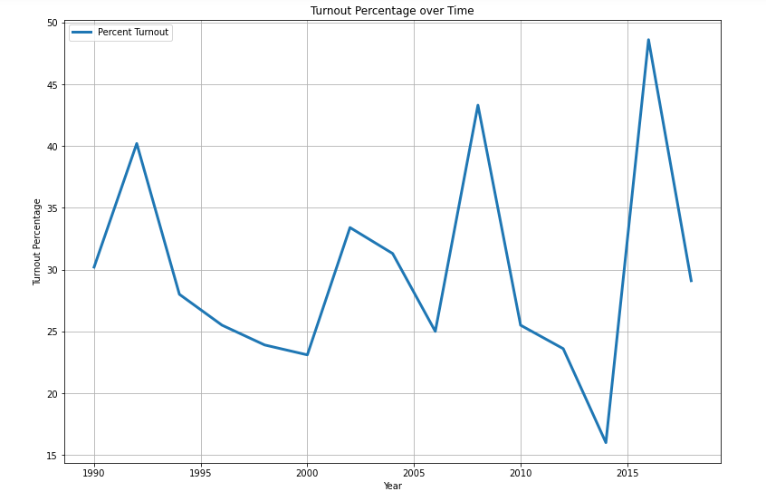
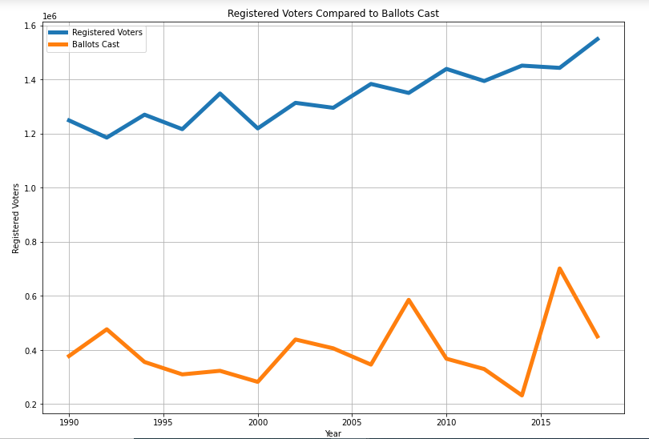

Chicago loves politics and a long story. Here's a chance to see both. The history of Cook County elections is a wild one. Explore the data below to learn more.
This is a historically segregated city and still is. See how many registered voters there are on the map to visualize one aspect of this divided city.

Since 1990, Cook County has never seen greater participation rates than just under half of all registered voters. Those are rookie numbers! While it's attributable to voter apathy, systematic voter suppression also lowers the numbers of votes cast vs. registrants. We will get an interesting model for new methods like push notifications to registrants during this election which will see mail in ballots like never before due to the pandemic. I'm very excited to update this data after the election!
Even when there's high rates of registration, There's a big difference in the number of registrants that actually cast a vote. Who bought their tickets and didn't come to the show?
Let's bring it all together. Of the people who registered, and of thems that actually voted, how did they vote? Here's some data showing their results